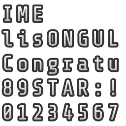
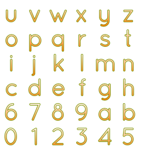
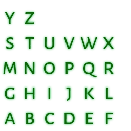
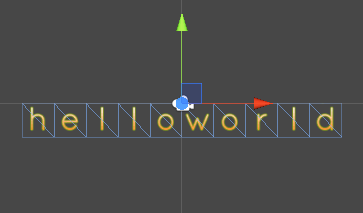

概要
Webフォントを利用してフォントのテクスチャを生成するツールです。下記のリンクから使うことができます。
主にゲームのスコアなどに装飾をした文字を出したい場合に使うことを想定しています。
サンプル
このツールを使用して作成したフォント用のテクスチャのサンプルです。
 
使い方
Google Fontsから好きなフォントを探してフォント名を入れて「load」ボタンを押すとフォントをロードします。
各種の設定項目(フォントサイズ、アウトラインなど)を動かして好きな見た目になるように調節します。
PNGファイルのダウンロード
「PNGダウンロード」をクリックするとPNGファイルがダウンロードできます。
設定の保存
「保存」ボタンを押すとブラウザに現在の設定を保存します。(Local Storageを使用)
Unityのフォントに使う
- フォントのテクスチャを生成したらPNGファイルとfontsettingsファイルをダウンロードします。
- Unityのプロジェクトにそれぞれのファイルをコピーします。
- フォント用のマテリアルを作成します。
- マテリアルにフォントのテクスチャとシェーダを設定します。
- ヒエラルキーにGUI Textまたは3D Textを追加して、フォントを設定します。
